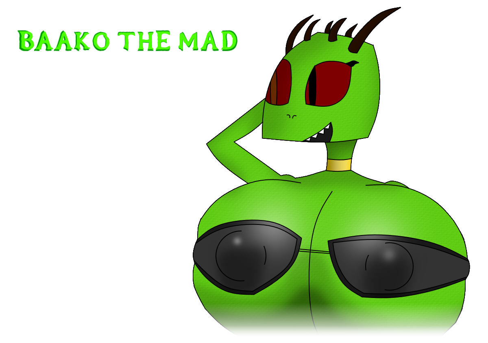

(Still a Breton main)
Baako is a big, busty, crazy lizard who thought she was a goat until she rather wanted to be a mongoose in the end. An end that started her Mongoose life, well maybe a half goat life because you can't change who you are apparently. Unless you're a god or something. Yeah.
She was part of the Sheogorath cult once until she decided to actually live a somewhat "living" life. She wasn't really a good Mongoat so she would go inside cities to do some working with the boys. However the boys didn't respect her personal space so she left them in tears and decided to be a bandit leader for awhile. She wasn't allowed to pay her men (Mostly men) with gold but instead some penetration class methods instead which she's not too bad at. But it was getting boring later on so she left the bandit life in tears and decided to be an average adventurer with enormous breasts. Happy ending except for the men that cried over her leaving.
Baako was supposed to be my version of Beewos until I decided to go with Beewos anyway. But now Baako is gonna be used a-bit more.
Go back to the main page